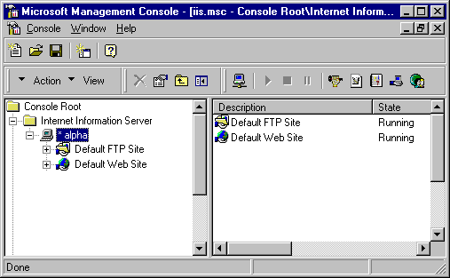
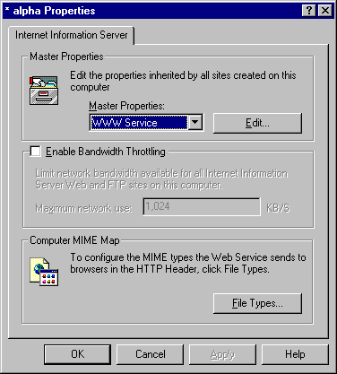
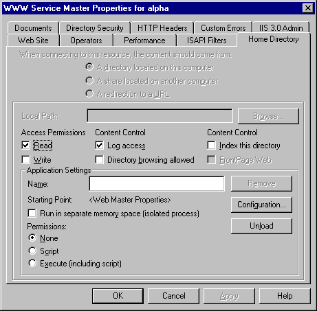
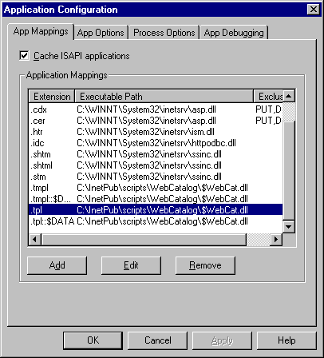
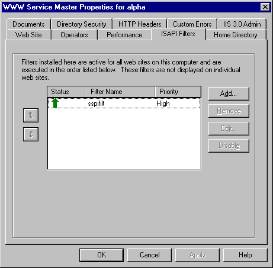
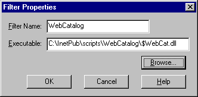

Appendix A: Installing WebDNA for IIS 4.x
Starting with Microsoft IIS version 4, IIS no longer uses the Windows Registry to store their configuration settings. These IIS versions now use a separate database, called the 'Metabase', to store their settings. The WebDNA Installer program does update the Metabase automatically. However, if their are any problems, you may need to manually configure IIS using the Microsoft Management Console.
The following instructions guide you through configuring a suffix mapping (so IIS knows to send .tpl files through WebDNA) and an ISAPI filter (so WebDNA can intercept username/password requests from remote browsers).
First, open the Microsoft Management Console. You should see a screen similar to the following:

Use the mouse to select your web server's computer name (highlighted as "alpha" in the picture above). Now right-click to choose the properties for this computer. You should see a dialog similar to the following:

Click the Edit button for the WWW Service Master Properties, and on the following page click the Home Directory tab, and you should see the following:

Click the Configuration button to bring up the following dialog:

Your configuration will not have the ".tpl" entries yet. You need to add those now. Click the Add button and enter .tpl for the file extension. Either type the full path to $WebCat.dll (similar to what you see in the window above) or use the Browse button to find $WebCat.dll.
Note: your Windows Explorer may be configured to 'hide' files with the extension ".dll," and may not show you $WebCat.dll when you navigate to that folder. In that case, either type the full path, or change the options on Explorer so it does not hide .dll files.
There is a bug in IIS 3.0 and 4.0 allowing certain sensitive data to be downloaded using an obscure "$DATA" command. You can overcome this security breach by creating a ".tpl::$DATA" suffix mapping like the one shown in the screen above. WebDNA then intercepts and prevents such data from being viewed from your site.
Next, set up WebDNA as an IIS Filter so it can intercept passwords from remote browsers. Click OK on the screen shown above, then click the ISAPI Filters tab to see the screen shown below:

Click the Add button to see the following screen:

Type WebCatalog into the Filter Name, and then either type or browse to $WebCat.dll (the same one you used in the previous suffix mapping dialogs). Apply all changes, then restart IIS, and your system should be configured properly.